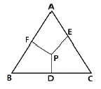
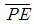
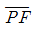
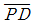
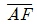
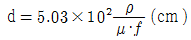
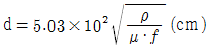
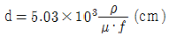
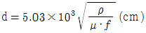
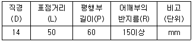

금속재료산업기사 (2017-09-23 기출문제)
1과목: 금속재료
1. 특수강에서 담금질성의 개선 및 경화능을 가장 크게 향상시키는 것은?
- B
- Cr
- Ni
- Cu
(정답률: 76%)

2. 22K(22 carat)는 순금의 함유량이 약 몇 % 인가?
- 25%
- 58.3%
- 75%
- 91.7%
(정답률: 88%)
3. 상온에서 열팽창계수가 매우 작아 표준자, 새도우 마스크, IC 기판 등에 사용되는 36% Ni-Fe 합금은?
- 인바(Invar)
- 퍼말로이(Permalloy)
- 니칼로이(Nicalloy)
- 하스텔로이(Hastalloy)
(정답률: 82%)
4. 금속간화합물에 대한 설명으로 틀린 것은?
- 낮은 용융점을 갖는다.
- 용융상태에서 존재하지 않는다.
- 간단한 원자비로 결합되어 있다.
- 탄소강에서는 Fe3C가 대표적이다.
(정답률: 64%)
5. 베어링합금으로 사용되는 대표적인 Cu-Pb 합금은?
- KM alloy
- 켈밋(Kelmet)
- 자마크 2(ZAMAK 2)
- 활자금속(Type metal)
(정답률: 87%)
6. 고 망간강이라 불리며, 대표적인 내마모성강으로 Mn이 약 12% 함유된 강은?
- 크롬강
- 해드필드강
- 오스테나이트 스테인레스강
- 마르텐자이트 스테인레스강
(정답률: 87%)
7. 철강의 5대 원소에 해당되지 않는 것은?
- S
- Si
- Mn
- Mg
(정답률: 85%)
8. 실용되고 있는 형상기억합금계는?
- Ag - Cu계
- Co - Al계
- Ti- Ni계
- Co - Mn계
(정답률: 85%)
9. 구상흑연 주철 제조 시 편상흑연을 구상화하기 위해 구상화제에 해당되지 않는 것은?
- Mg
- Ca
- Ce
- Sn
(정답률: 58%)
10. 오스테나이트계 스테인레스강의 특성이 아닌 것은?
- 내식성이 우수하다.
- 강자성체이며 인성이 풍부하다.
- 가공이 쉽고 용접도 비교적 용이하다.
- 염산, 염소가스, 황산 등에 의해 입계부식이 발생하기 쉽다.
(정답률: 65%)
11. 어떤 물질이 일정한 온도, 자장, 전류밀도 하에서 전기저항이 0(zero)이 되는 현상은?
- 초투자율
- 초저항
- 초전도
- 초전류
(정답률: 83%)
12. 순철의 냉각 시 결정구조가 FCC → BCC로 격자가 변화하는 동소 변태는?
- A4변태
- A3변태
- A2변태
- A1변태
(정답률: 72%)
13. 항공기용 소재에 사용되는 Al - Cu - Mg - Mn 합금은?
- 실루민
- 라우탈
- 네이벌
- 두랄루민
(정답률: 87%)
14. 방진(제진)합금을 방진기구에 따라 나눌 때 이러한 기구의 종류에 해당되지 않는 것은?
- 쌍정형
- 전위형
- 복합형
- 상자성체
(정답률: 77%)
15. 이온화경향이 가장 큰 원소는?
- Ca
- Zn
- Fe
- Mg
(정답률: 64%)
16. 전열합금에 요구되는 특성으로 옳은 것은?
- 전기저항이 클 것
- 열팽창계수가 클 것
- 고온강도가 적을 것
- 저항의 온도차가 클 것
(정답률: 71%)
17. Mg 합금의 특징으로 옳은 것은?
- 상온변형이 가능하다.
- 고온에서 비활성이다.
- 감쇠능이 주철보다 크다.
- 치수안정성이 떨어진다.
(정답률: 68%)
18. 탄소강에 함유되는 원소의 영향 중 Fe와 화합하여 생성된 화합물로 인하여 적열취성의 원인이 되며, 함유량이 0.02%이하 일지라도 연신율, 충격치 등을 저하시키는 원소는?
- Mn
- Si
- P
- S
(정답률: 72%)
19. 양은(Nickel silver)의 합금성분계로 맞는 것은?
- Cu – Ni – Zn
- Cu – Mn - Ag
- Al - Ni - Zn
- Al - Ni - Ag
(정답률: 70%)
20. 철강을 냉간가공할 때 경도가 증가하는 주된 이유는?
- 전위가 증가하기 때문
- 부피가 감소하기 때문
- 무게가 증가히기 때문
- 밀도가 감소하기 때문
(정답률: 66%)
2과목: 금속조직
21. Fe-C 평형상태도에서 탄소량이 0.5%인 아공석강의 펄라이트 중 페라이트 양은 약 얼마인가? (단, 공석조성은 탄소량 0.8%, A1온도 이하에서 페라이트의 탄소 고용도를 0%, Fe3C 는 탄소함량 6.67%로 계산한다.)
- 13%
- 25%
- 55%
- 63%
(정답률: 46%)
22. 순금속이나 합금에서 확산에 의해 나타나는 현상이 아닌 것은?
- 침탄
- 상변화
- 구상화
- 마르텐자이트화
(정답률: 66%)
23. 오스테나이트에서 펄라이트로의 변태 중 결정입도의 영향에 대한 설명으로 틀린 것은?
- 핵생성은 에너지가 높은 장소에서 일어난다.
- 펄라이트의 핵생성은 대부분 결정입계에서 일어난다.
- 펄라이트 층간간격은 변태온도에 의해 결정된다.
- 오스테나이트의 결정립이 조대할수록 미세한 펄라이트 조직으로 된다.
(정답률: 72%)
24. 회복과정에서 축적에너지의 크기에 영향을 주는 인자가 아닌 것은?
- 가공도
- 가공온도
- 응고온도
- 결정립도
(정답률: 47%)
25. 순금속 중에 같은 종류의 원자가 확산하는 현상은?
- 자기확산
- 입계확산
- 상호확산
- 표면확산
(정답률: 76%)
26. 구리판을 철강나사로 체결하여 사용할 때 서로 다른 금속사이에 작용하는 부식은?
- 공석
- 입계부식
- 응력부식
- 전류부식
(정답률: 46%)
27. 0.18%C 강을 1500℃[δ+ L(융액)]에서 오스테나이트(γ)까지 서냉하였을 때 일어날 수 있는 반응은?
- 편정반응
- 공정반응
- 공석반응
- 포정반응
(정답률: 55%)
28. 고온에서 불규칙 상태의 고용체를 서냉 시 규칙격자가 형성되기 시작하는 온도는?
- 재결정온도
- 임계온도
- 응고온도
- 전이온도
(정답률: 52%)
29. 다음 중 탄화물을 형성하는 합금원소는?
- Al
- Mn
- Ta
- Ni
(정답률: 53%)
30. 다음 3원 상태도에서 A, B, C 상이 P점에서 평형을 이루었다면 B의 양은?





(정답률: 73%)
31. 킹크밴드(kink band)를 형성하기 쉬운 금속은?
- Cr
- Zn
- V
- Mo
(정답률: 50%)
32. 전위와 버거스벡터에 대한 설명으로 틀린 것은?
- 나사전위와 버거스벡터의 방향은 평행하다.
- 칼날전위와 버거스벡터의 방향은 평행하다.
- 나사 전위의 슬립 방향은 버거스벡테의 방향과 평행하다.
- 전위를 동반하는 격자 뒤틀림의 크기와 방향은 버거스 벡터로 나타낸다.
(정답률: 72%)
33. 규칙-불규칙 변태에 대한 설명으로 옳은 것은?
- 일반적으로 규칙화의 진행과 함께 강도가 증가한다.
- 규칙상은 상자성체이나 불규칙상은 강자성체이다.
- 일반적으로 규칙화의 진행과 함께 탄성계수는 작게 된다.
- 규칙도가 큰 합금은 비저항이 크고, 불규칙이 됨에 따라 비저항이 작게 된다.
(정답률: 58%)
34. 금속의 강화기구가 아닌 것은?
- 분산 강화
- 석출 강화
- 재결정 강화
- 고용체 강화
(정답률: 48%)
35. Fe 단결정을 변압기의 철심재료로 사용할 때 압연 방향이 어떤 방향인 경우 자기손실이 최소가 되는가?
- [111]
- [011]
- [110]
- [100]
(정답률: 47%)
36. 금속의 응고점이하에서부터 응고가 시작되면 액체중의 원자가 모여서 매우 작은 입자를 형성하는 것은?
- 엔탈피
- 단위포
- 엠브리오
- 결정격자
(정답률: 59%)
37. 다음 중 회복과정과 관련이 없는 것은?
- 크리프(creep)
- 서브결정(subgrain)
- 서브입계(subboundary)
- 폴리고니제이션(polygonization)
(정답률: 65%)
38. 전위의 상승운동에 대한 설명으로 틀린 것은?
- 원자의 확산 없이 일어난다.
- 슬립면에 대하여 수직한 운동이다.
- 온도가 높을수록 활발하게 일어난다.
- 원자공공(vacancy)의 확산에 의해 전위의 상승이 일어난다.
(정답률: 64%)
39. 침입형 원자가 원자공공과 한 쌍으로 되어 있는 결함은?
- 쌍정
- 크로디온
- 프렌켈결함
- 쇼트키결함
(정답률: 54%)
40. 상온에서 α-Fe의 슬립면과 방향은?
- (111), [110]
- (110), [111]
- (100), [111]
- (111), [100]
(정답률: 53%)
3과목: 금속열처리
41. 탄소강을 담금질할 때 재료외부와 내부의 담금질 효과가 다르게 나타나는 현상은?
- 질량효과
- 노치효과
- 천이효과
- 피니싱효과
(정답률: 72%)
42. 구상흑연주철에서 불림(normalizing)처리의 온도와 냉각방법은?
- 900℃ 가열처리후 공냉
- 700℃ 가열처리후 유냉
- 600℃ 가열처리후 공냉
- 500℃ 가열처리후 서냉
(정답률: 58%)
43. 과공석강을 완전어닐링(full annealing)하여 얻을 수 있는 조직으로 옳은 것은?
- 페라이트 + 층상 펄라이트
- 시멘타이트 + 오스테나이트
- 오스테나이트 + 레데뷰라이트
- 시멘타이트 + 층상 펄라이트
(정답률: 63%)
44. 알루미늄, 마그네슘 및 그 합금의 질별기호에 대한 정의로 옳은 것은?
- T : 용체화 처리한 것
- W : 가공경화한 것
- Hb : 어닐링한 것
- Fa : 제조한 그대로의 것
(정답률: 57%)
45. 고주파 경화법에서 유도 전류에 의한 발생열의 침투깊이(d)를 구하는 식으로 옳은 것은? (단, ρ는 강재의 비저항(μΩㆍ㎝ ), μ는 강재의 투자율, f는 주파수(Hz)이다.)




(정답률: 51%)
46. 침탄법에 비해 질화법처리의 특징으로 틀린 것은?
- 취화되기 쉽다.
- 열처리가 필요없다.
- 경화에 의한 변형이 적다.
- 처리강의 종류에 제한을 받지 않는다.
(정답률: 52%)
47. 고체침탄제의 구비조건이 아닌 것은?
- 고온에서 침탄력이 강해야 한다.
- 침탄성분 중 P, S 성분이 적어야 한다.
- 장시간 사용해도 동일 침탄력을 유지하여야 한다.
- 침탄 시 용적변화가 크고 침탄 강재 표면에 고착물이 융착되어야 한다.
(정답률: 74%)
48. 마텐자이트 변태의 일반적인 특징으로 틀린 것은?
- 마텐자이트는 고용체의 단일상이다.
- 마텐자이트 변태는 확산에 의한 변태이다.
- 마텐자이트 변태를 하면 표면기복이 생긴다.
- 오스테나이트와 마텐자이트 사이에는 일정한 결정 방위관계가 있다.
(정답률: 67%)
49. 열전대 종류 중 사용한도가 1400℃까지 사용가능한 것은?
- K(CA)형
- T(CC)형
- J(IC)형
- R(PR)형
(정답률: 46%)
50. 열처리할 때 국부적으로 경화되지 않는 연점(softspot)이 발생하는 가장 큰 원인은?
- 소금물을 사용할 때
- 냉각액의 양이 많을 때
- 오일의 냉각액을 사용할 때
- 수냉 중 기포가 부착 되었을 때
(정답률: 76%)
51. 탄화물을 피복하는 TD처리(Toyota Diffusion)의 특징으로 틀린 것은?
- 처리온도가 낮아 용융 염욕 중에서는 사용할 수 없다.
- 설비가 간단하고 처리품의 조작이 자유롭다.
- 높은 경도와 우수한 내소착성이 있다.
- 확산법에 의한 탄화물 피복법이다.
(정답률: 70%)
52. 담금질처리 후 경도부족이 발생하는 원인을 설명한 것 중 틀린 것은?
- 담금질 시 냉각속도가 임계냉각속도보다 빠른 경우
- 담금질 개시온도가 너무 낮아진 경우
- 과도한 잔류오스테나이트로 인한 경우
- 담금질 시 가열온도가 너무 낮은 경우
(정답률: 59%)
53. 강을 열처리 시 산화에 기인되는 것이 아닌 것은?
- 탈탄
- 고운 표면
- 경도 불균일
- 담금질 시 균열발생
(정답률: 74%)
54. 강의 경화능을 향상시킬 수 있는 방법으로 가장 적당한 것은?
- 질량 효과를 크게 한다.
- 담금질성을 증가시키는 Co, V 등을 첨가한다.
- 오스테나이트의 결정입자를 크게 한다.
- 직경이 작은 제품보다 큰 제품을 열처리한다.
(정답률: 36%)
55. 단일 제어계로 전자 접촉기, 전자 릴레이 등을 결합시켜 전기를 공급하는 방식은?
- 비례제어식
- 정치제어식
- 프로그램제어식
- 온-오프(on - off)식
(정답률: 51%)
56. 베이나이트(bainite)담금질의 항온 열처리 작업 시 처리하는 온도범위로 맞는 것은?
- Ar″이하
- Ms 직하
- Ms ~ Mf
- Ar′~ Ar″
(정답률: 62%)
57. 공석강에 실온에서 담금질할 때 마텐자이트로 변태하지 않고 남아 있는 것은?
- 잔류 오스테나이트
- 트루스타이트
- 시멘타이트
- 페라이트
(정답률: 75%)
58. 탄소강을 담금질할 때 열전달 속도가 가장 빠르고 금속 표면의 온도가 약간 감소하여 연속적으로 증기막이 붕괴되는 단계는?
- 증기막 단계
- 비등단계
- 대류단계
- 특성단계
(정답률: 63%)
59. 담금질 한 강에 강인성을 주기 위해 실시하는 열처리 방법은?
- 퀜칭
- 템퍼링
- 어닐링
- 노멀라이징
(정답률: 59%)
60. 화학적 증착법(CVD)에 관한 설명으로 틀린 것은?
- 가스반응을 이용하여 금속, 탄화물, 질화물, 산화물 및 황화물 등을 피복하는 방법이다.
- 저온에서 행하므로 기판 및 모재의 제한이 없고 금속 결합을 하므로 밀착강도가 강하다.
- 반응물질로 염화물 등의 할로겐화물이 사용되며 결정성이 양호한 코팅 막을 얻을 수 있다.
- 피막의 밀착성이 물리적 증착법(PVD)에 비해 양호하며 균일한 코팅을 얻을 수 있다.
(정답률: 64%)
4과목: 재료시험
61. 강의 비금속 재재물 측정방법(KS D 0204)에서 그룹 A에 해당하는 것은?
- 황화물 종류
- 규산염 종류
- 구형산화물 종류
- 알루민산염 종류
(정답률: 71%)
62. KS B 0801에서는 금속재료 인장시험편 4호 봉강의 경우 규격을 다음 표와 같이 규정하고 있다. 이 중 연신율 측정의 기준이 되는 것은?

- 직경
- 표점거리
- 평행부의 길이
- 어깨부의 반지름
(정답률: 71%)
63. 피로한도 및 피로수명에 대한 설명으로 틀린 것은?
- 직경이 크면 피로한도는 작아진다.
- 노치가 있는 시험편의 피로한도는 작다.
- 표면이 거친 것이 고운 것보다 피로한도가 커진다.
- 피로수명이란 피로 파괴가 일어나기까지의 응력-반복횟수를 말한다.
(정답률: 51%)
64. KS B 0804의 금속재료 굽힘시험에 사용되는 직사각형 시험편의 모서리 부분은 반지름이 시험편 두께의 얼마를 넘지 않도록 라운딩하여야 하는가?
- 1/2
- 1/3
- 1/5
- 1/10
(정답률: 57%)
65. 크리프 시험은 재료에 일정한 하중을 가하고 일정한 온도에서 긴 시간 유지하면서 시간이 경과함에 따라 재료의 어떤 성질을 측정하는가?
- 강도(strength)
- 연성(ductility)
- 변형(strain)
- 탄성(elasticity)
(정답률: 60%)
66. 압축시험기에서(KS B 5533)시험기에 대한 명판 기재와 검사 보고서로 나눌 때 명판 기재사항이 아닌 것은?
- 설치장소
- 스트로크
- 칭량의 종류
- 시험기의 형식
(정답률: 67%)
67. 펄스 반사법에 따라 초음파탐상 시험방법(KS B 0817)에서 탐상도형의 표시 기호 중 기본 기호가 아닌 것은?
- A
- B
- T
- W
(정답률: 47%)
68. 경도시험에서 해머를 재료표면에 낙하시켜 튀어오르는 반발높이에 의하여 측정하는 반발식 경도는?
- 쇼어경도
- 브리넬경도
- 로크웰경도
- 비커즈경도
(정답률: 78%)
69. 다음 비파괴 시험법 중 내부 결함의 검출에 가장 적합한 것은?
- 방사선투과시험
- 침투탐상시험
- 자분탐상시험
- 와전류탐상시험
(정답률: 75%)
70. 물건이 떨어지거나 날아와서 사람이 맞는 경우의 상해는?
- 전도 및 도피
- 낙하 및 비래
- 붕기 및 골절
- 파열 및 충돌
(정답률: 75%)
71. 로크웰 경도기를 이용한 경도시험에서 C스케일에 사용하는 다이아몬드 원추의 각도와 기준 하중은?
- 120°, 100kgf
- 136°, 15kgf
- 120°, 10kgf
- 136°, 150kgf
(정답률: 53%)
72. 정량 조직검사를 통하여 얻을 수 있는 정보가 아닌 것은?
- 조직의 형태
- 금속재료의 성분
- 존재하는 상의 종류
- 개재물이나 결정입도의 크기
(정답률: 56%)
73. 설퍼 프린트(sulfur print)는 철강 재료의 무엇을 알기 위한 실험인가?
- 탄소의 분포상태와 편석
- 규소의 분포상태와 편석
- 망간의 분포상태와 편석
- 황의 분포상태와 편석
(정답률: 75%)
74. 원형선단을 갖는 펀치를 원판 시험면에 접촉시키고 작은 시험기이 압축장치로 가압하여 하중을 측정하고 시편의 연성을 측정하기 위한 시험은?
- 마모시험
- 크리프 시험
- 에릭센시험
- 스프링 시험
(정답률: 73%)
75. 샤르피 충격시험시 시편의 흡수에너지 E이 계산식으로 옳은 것은? (단, W = 충격시험에 사용되는 해머의 중량(kg), R = 해머의 회전중심에서 무게중심까지의 거리(m), α = 들어 올린 해머의 각도, β = 시험편 절단 후 올라간 해머의 각도)
- E = WR(cosβ - cosα)
- E = WR(cosβ + cosα)
- E = WR(sinβ - sinα)
- E = WR(sinβ + sinα)
(정답률: 72%)
76. 금속재료의 단축 압축시험과정에서 갖추어야 할 사항이 아닌 것은?
- 시험편의 양단면은 완전 평면상태로 서로 평행하여야 한다.
- 주철의 압축시험은 시험편이 대각선으로 전단되는 순간 시험기를 정지시켜야 한다.
- 비교적 연성재료의 압축시험은 시험편이 좌굴 또는 측면의 팽창부에 균열이 발생한 후에도 계속 시험한다.
- 고강도 취성재료는 압축파괴 시 시험편의 파편이 비산하므로 시험편 주위에 안전망을 설치하고 시험해야 한다.
(정답률: 72%)
77. 금속재료의 현미경 조직검사에서 황동(Brass)이나 청동(bronze)에 대한 부식용 시약으로 적합한 것은?
- 왕수용액
- 염화제2철 용액
- 질산-알콜용액
- 수산화나트륨용액
(정답률: 65%)
78. 강재의 재질 판별법 중의 하나인 불꽃시험 시 시험통칙에 대한 설명으로 틀린 것은?
- 유선의 관찰 시 색깔, 밝기, 길이, 굵기 등을 관찰한다.
- 바람의 영향을 피하는 방향으로 불꽃을 방출시킨다.
- 0.2% 탄소강의 불꽃길이가 500mm 정도의 압력을 가한다.
- 시험장소는 개인의 작업안전을 위하여 직사광선이 닿는 밝은 실내가 좋다.
(정답률: 77%)
79. 마모 현상에 대한 설명으로 틀린 것은?
- 접촉압력이 클수록 마모저항은 적다.
- 마모 변질층은 모체금속의 결정구조와 같다.
- 진공상태에서는 대기보다 마모저항이 크다.
- 고주파 담금질 처리된 강은 마모손실이 적다.
(정답률: 33%)
80. 다음 중 비파괴검사의 목적이 아닌 것은?
- 제품에 대한 신뢰성의 향상
- 비파괴 시험기의 결함발견
- 제조기술 개선 및 제품의 수명연장
- 불량률 감소에 따른 생산원가 절감
(정답률: 72%)